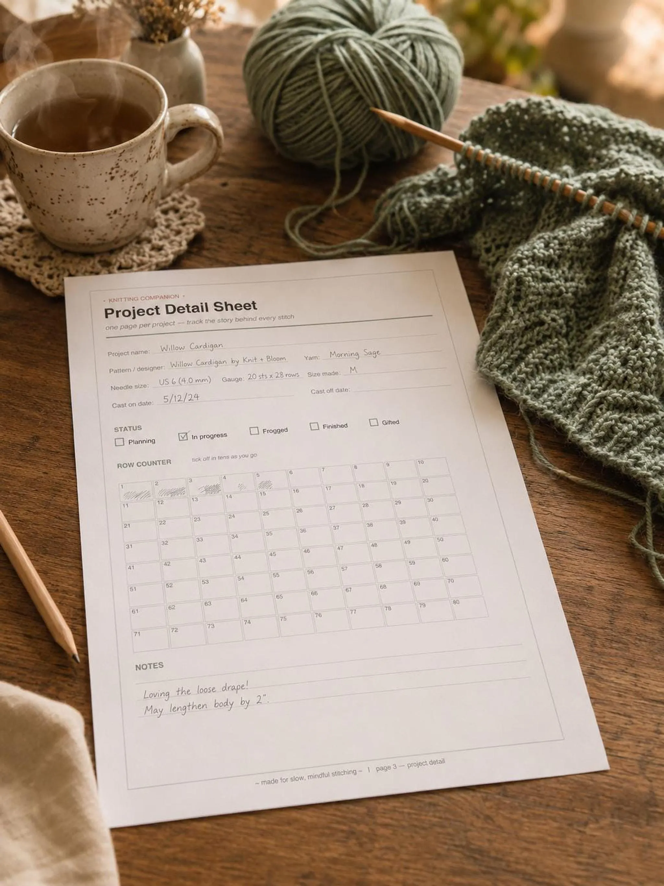

A little help before you cast on from Piyi ❤️
Sometimes you’ve found the yarn and the pattern, but there’s still a number you’d like to check. These little tools can help you explore a yarn swap, plan how much to buy or see what your gauge means for fit.
Gauge Fixer
Swatch not matching? See how your gauge changes the pattern’s finished measurements, compare listed sizes and explore adjusted stitch and row counts before deciding what to knit.
Open the Gauge FixerYarn Swap
Found another yarn you love? Compare yarn weight, length per 100 g and general fibre characteristics. Estimate replacement balls or skeins with a buffer, and compare costs if you have both prices.
Open Yarn SwapYarn Estimator
Wondering whether your stash will stretch to your idea? Get a starting yarn estimate for a knitting or crochet project, with an adjustable safety margin and ball or skein counts based on your yarn label.
Open the Yarn EstimatorA starting point for your plans: check a washed swatch before choosing a yarn or size. Yarn quantities are estimates, and changing size or stitch counts also means checking the rest of your pattern.
More from The Thread Within

Woodland Colorwork Chart Bundle
A fox, a hedgehog, a squirrel or a rabbit — a little woodland company for your next colourwork project. Use the charts to add a detail that makes it yours.
Buy on Etsy
Printable Craft Trackers
Somewhere to leave yourself a note about the row you reached, the hook you used or the yarn you’ll want to find again. Printable trackers for knitting, socks, crochet, blankets and amigurumi.
Buy on Etsy
Raglan Calculator
For the jumper you have in mind: bring your swatch and measurements, choose a neckline, and work through the raglan instructions, sleeve shaping and schematic.
Get the calculator — £15About The Thread Within
I’m Piyi, the knitter behind The Thread Within. I love making jumpers, and I’d rather spend my time knitting than redoing the same calculations. These are the tools and little resources I’m building to make that part of a project feel easier — for you as well as me.
You can also join me on YouTube for knitting and everyday moments, with videos in English and Greek.